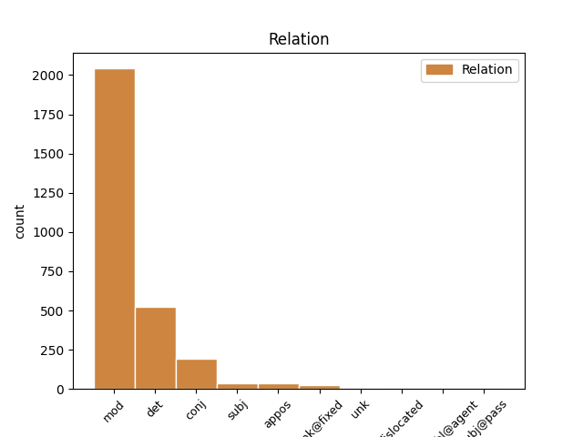
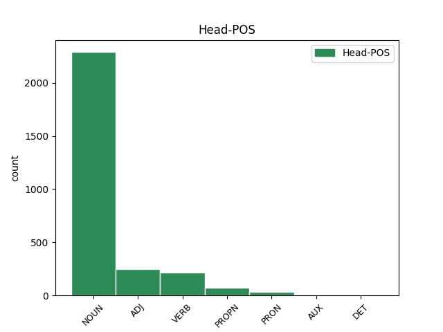
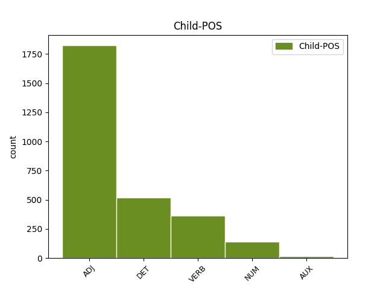

Distribution of features within this leaf



Agreement Rules sorted by frequency.
- When the dependent token is the modifer(mod) of the head token, and the head token is NOUN and the dependent token is ADJ.
1 си _ _ _ _ 0 _ _ _
2 же _ _ _ _ 0 _ _ _
3 писана _ _ _ _ 0 _ _ _
4 бꙑшѧ _ _ _ _ 0 _ _ _
5 да _ _ _ _ 0 _ _ _
6 вѣрѫ _ _ _ _ 0 _ _ _
7 имете _ _ _ _ 0 _ _ _
8 ѣко _ _ _ _ 0 _ _ _
9 и҃с _ _ _ _ 0 _ _ _
10 естъ _ _ _ _ 0 _ _ _
11 х҃ъ _ _ _ _ 0 _ _ _
12 с҃нъ _ _ _ _ 0 _ _ _
13 б҃жіи _ _ _ _ 0 _ _ _
14 ꙇ _ _ _ _ 0 _ _ _
15 да _ _ _ _ 0 _ _ _
16 вѣрѫѭште _ _ _ _ 0 _ _ _
17 живота животъ NOUN Nb Case=Gen|Gender=Masc|Number=Sing 0 _ _ _
18 вѣчънааго вѣчьнъ ADJ A- Case=Gen|Degree=Pos|Gender=Masc,Neut|Number=Sing|Strength=Weak 17 mod _ ref=JOHN_20.31
19 имате _ _ _ _ 0 _ _ _
20 въ _ _ _ _ 0 _ _ _
21 імѧ _ _ _ _ 0 _ _ _
22 его _ _ _ _ 0 _ _ _
1 мънога _ _ _ _ 0 _ _ _
2 же _ _ _ _ 0 _ _ _
3 ина _ _ _ _ 0 _ _ _
4 знамениѣ _ _ _ _ 0 _ _ _
5 сътвори _ _ _ _ 0 _ _ _
6 и҃с _ _ _ _ 0 _ _ _
7 прѣдъ _ _ _ _ 0 _ _ _
8 оученикꙑ _ _ _ _ 0 _ _ _
9 своими _ _ _ _ 0 _ _ _
10 ѣже _ _ _ _ 0 _ _ _
11 не _ _ _ _ 0 _ _ _
12 сѫтъ _ _ _ _ 0 _ _ _
13 писана _ _ _ _ 0 _ _ _
14 въ _ _ _ _ 0 _ _ _
15 кънигахъ кънигꙑ NOUN Nb Case=Loc|Gender=Fem|Number=Plur 0 _ _ _
16 сихъ сь DET Pd Case=Loc|Number=Plur 15 det _ ref=JOHN_20.30
1 тъгда _ _ _ _ 0 _ _ _
2 же _ _ _ _ 0 _ _ _
3 вьниде _ _ _ _ 0 _ _ _
4 ꙇ _ _ _ _ 0 _ _ _
5 дроугꙑ _ _ _ _ 0 _ _ _
6 оученикъ оученикъ NOUN Nb Case=Nom|Gender=Masc|Number=Sing 0 _ _ _
7 пришедꙑ прити VERB V- Case=Nom|Gender=Masc|Number=Sing|Strength=Weak|Tense=Past|VerbForm=Part|Voice=Act 6 mod _ ref=JOHN_20.8
8 прѣжде _ _ _ _ 0 _ _ _
9 къ _ _ _ _ 0 _ _ _
10 гробоу _ _ _ _ 0 _ _ _
11 ꙇ _ _ _ _ 0 _ _ _
12 видѣ _ _ _ _ 0 _ _ _
13 и _ _ _ _ 0 _ _ _
14 вѣрова _ _ _ _ 0 _ _ _
1 ꙇ _ _ _ _ 0 _ _ _
2 видѣ _ _ _ _ 0 _ _ _
3 дъва дъва NUM Ma Case=Acc|Gender=Masc|Number=Dual 4 mod _ ref=JOHN_20.12
4 анⷸ҇ла ангелъ NOUN Nb Case=Acc|Gender=Masc|Number=Dual 0 _ _ _
5 въ _ _ _ _ 0 _ _ _
6 бѣлахъ _ _ _ _ 0 _ _ _
7 сѣдѧшта _ _ _ _ 0 _ _ _
8 единого _ _ _ _ 0 _ _ _
9 оу _ _ _ _ 0 _ _ _
10 главꙑ _ _ _ _ 0 _ _ _
11 ꙇ _ _ _ _ 0 _ _ _
12 единого _ _ _ _ 0 _ _ _
13 оу _ _ _ _ 0 _ _ _
14 ногоу _ _ _ _ 0 _ _ _
15 ꙇдеже _ _ _ _ 0 _ _ _
16 бѣ _ _ _ _ 0 _ _ _
17 лежало _ _ _ _ 0 _ _ _
18 тѣло _ _ _ _ 0 _ _ _
19 и҃сво _ _ _ _ 0 _ _ _
1 блажени _ _ _ _ 0 _ _ _
2 не _ _ _ _ 0 _ _ _
3 видѣвъ. видѣти VERB V- Case=Nom|Gender=Masc|Number=Plur|Strength=Weak|Tense=Past|VerbForm=Part|Voice=Act 0 _ _ _
4 шеи _ _ _ _ 0 _ _ _
5 ꙇ _ _ _ _ 0 _ _ _
6 вѣровавъшеи вѣровати VERB V- Case=Nom|Gender=Masc|Number=Plur|Strength=Weak|Tense=Past|VerbForm=Part|Voice=Pass 3 conj _ ref=JOHN_20.29
1 ꙇ _ _ _ _ 0 _ _ _
2 аште _ _ _ _ 0 _ _ _
3 рекѫ _ _ _ _ 0 _ _ _
4 ѣко _ _ _ _ 0 _ _ _
5 не _ _ _ _ 0 _ _ _
6 вѣмь _ _ _ _ 0 _ _ _
7 его _ _ _ _ 0 _ _ _
8 бѫдѫ _ _ _ _ 0 _ _ _
9 подобенъ подобьнъ ADJ A- Case=Nom|Degree=Pos|Gender=Masc|Number=Sing|Strength=Strong 11 mod _ ref=JOHN_8.55
10 вамъ _ _ _ _ 0 _ _ _
11 лъжь лъжь ADJ A- Case=Nom|Degree=Pos|Gender=Masc|Number=Sing|Strength=Strong 0 _ _ _
1 аште _ _ _ _ 0 _ _ _
2 дѣлъ _ _ _ _ 0 _ _ _
3 не _ _ _ _ 0 _ _ _
4 бимь _ _ _ _ 0 _ _ _
5 сътворилъ _ _ _ _ 0 _ _ _
6 въ _ _ _ _ 0 _ _ _
7 нихъ _ _ _ _ 0 _ _ _
8 ꙇхъже _ _ _ _ 0 _ _ _
9 инъ инъ DET Px Case=Nom|Gender=Masc|Number=Sing 10 det _ ref=JOHN_15.24
10 никтоже никътоже ADJ Px Case=Nom|Number=Sing 0 _ _ _
11 сътвори _ _ _ _ 0 _ _ _
12 грѣха _ _ _ _ 0 _ _ _
13 не _ _ _ _ 0 _ _ _
14 бѫ _ _ _ _ 0 _ _ _
15 имѣли _ _ _ _ 0 _ _ _
1 принеси _ _ _ _ 0 _ _ _
2 пръста _ _ _ _ 0 _ _ _
3 твоего _ _ _ _ 0 _ _ _
4 сѣмо _ _ _ _ 0 _ _ _
5 ꙇ _ _ _ _ 0 _ _ _
6 визжь _ _ _ _ 0 _ _ _
7 рѫцѣ _ _ _ _ 0 _ _ _
8 мои _ _ _ _ 0 _ _ _
9 ꙇ҅ _ _ _ _ 0 _ _ _
10 принеси _ _ _ _ 0 _ _ _
11 рѫкѫ _ _ _ _ 0 _ _ _
12 твоѭ _ _ _ _ 0 _ _ _
13 ꙇ _ _ _ _ 0 _ _ _
14 въложи _ _ _ _ 0 _ _ _
15 въ _ _ _ _ 0 _ _ _
16 ребра _ _ _ _ 0 _ _ _
17 моѣ _ _ _ _ 0 _ _ _
18 ꙇ _ _ _ _ 0 _ _ _
19 не _ _ _ _ 0 _ _ _
20 бѫди _ _ _ _ 0 _ _ _
21 невѣренъ невѣрьнъ ADJ A- Case=Nom|Degree=Pos|Gender=Masc|Number=Sing|Strength=Strong 0 _ _ _
22 нъ _ _ _ _ 0 _ _ _
23 вѣренъ вѣрьнъ ADJ A- Case=Nom|Degree=Pos|Gender=Masc|Number=Sing|Strength=Strong 21 conj _ ref=JOHN_20.27
1 не _ _ _ _ 0 _ _ _
2 ѩсѧ _ _ _ _ 0 _ _ _
3 же _ _ _ _ 0 _ _ _
4 вѣрꙑ _ _ _ _ 0 _ _ _
5 июдеи _ _ _ _ 0 _ _ _
6 о _ _ _ _ 0 _ _ _
7 немь _ _ _ _ 0 _ _ _
8 ѣко _ _ _ _ 0 _ _ _
9 бѣ _ _ _ _ 0 _ _ _
10 слѣпъ _ _ _ _ 0 _ _ _
11 и _ _ _ _ 0 _ _ _
12 прозьрѣ _ _ _ _ 0 _ _ _
13 доньдеже _ _ _ _ 0 _ _ _
14 призъвашѧ _ _ _ _ 0 _ _ _
15 родителѣ _ _ _ _ 0 _ _ _
16 того тъ DET Pd Case=Gen|Gender=Masc,Neut|Number=Sing 17 det _ ref=JOHN_9.18
17 прозьрѣвъшааго прозьрѣти VERB V- Case=Gen|Gender=Masc|Number=Sing|Strength=Weak|Tense=Past|VerbForm=Part|Voice=Act 0 _ _ _
18 и _ _ _ _ 0 _ _ _
19 въпросишѧ _ _ _ _ 0 _ _ _
20 ѣ _ _ _ _ 0 _ _ _
21 г҃лѭште _ _ _ _ 0 _ _ _
1 вьсѣкѫ _ _ _ _ 0 _ _ _
2 разгѫ _ _ _ _ 0 _ _ _
3 не _ _ _ _ 0 _ _ _
4 творѧштѫѭ _ _ _ _ 0 _ _ _
5 плода _ _ _ _ 0 _ _ _
6 ꙇзъметъ _ _ _ _ 0 _ _ _
7 ѭ _ _ _ _ 0 _ _ _
8 ꙇ _ _ _ _ 0 _ _ _
9 вьсѣкѫ вьсꙗкъ ADJ A- Case=Acc|Degree=Pos|Gender=Fem|Number=Sing|Strength=Strong 10 mod _ ref=JOHN_15.2
10 творѧштѫ творити VERB V- Case=Acc|Gender=Fem|Number=Sing|Strength=Strong|Tense=Pres|VerbForm=Part|Voice=Act 0 _ _ _
11 плодъ _ _ _ _ 0 _ _ _
12 отрѣбитъ _ _ _ _ 0 _ _ _
13 ѭ _ _ _ _ 0 _ _ _
14 да _ _ _ _ 0 _ _ _
15 плодъ _ _ _ _ 0 _ _ _
16 болии _ _ _ _ 0 _ _ _
17 сътворитъ _ _ _ _ 0 _ _ _
1 Тома ѳома PROPN Ne Case=Nom|Gender=Masc|Number=Sing 0 _ _ _
2 же _ _ _ _ 0 _ _ _
3 единъ _ _ _ _ 0 _ _ _
4 отъ _ _ _ _ 0 _ _ _
5 обою _ _ _ _ 0 _ _ _
6 на _ _ _ _ 0 _ _ _
7 десѧте _ _ _ _ 0 _ _ _
8 нарицаемꙑ нарицати VERB V- Case=Nom|Gender=Masc|Number=Sing|Strength=Weak|Tense=Pres|VerbForm=Part|Voice=Pass 1 mod _ ref=JOHN_20.24
9 близнецъ _ _ _ _ 0 _ _ _
10 не _ _ _ _ 0 _ _ _
11 бѣ _ _ _ _ 0 _ _ _
12 тоу _ _ _ _ 0 _ _ _
13 съ _ _ _ _ 0 _ _ _
14 ними _ _ _ _ 0 _ _ _
15 егда _ _ _ _ 0 _ _ _
16 приде _ _ _ _ 0 _ _ _
17 и҃с _ _ _ _ 0 _ _ _
1 вьсѣкъ вьсꙗкъ ADJ A- Case=Nom|Degree=Pos|Gender=Masc|Number=Sing|Strength=Strong 3 subj _ ref=JOHN_3.20
2 бо _ _ _ _ 0 _ _ _
3 дѣлаѩи дѣлати VERB V- Case=Nom|Gender=Masc|Number=Sing|Strength=Weak|Tense=Pres|VerbForm=Part|Voice=Act 0 _ _ _
4 зъла _ _ _ _ 0 _ _ _
5 ненавидитъ _ _ _ _ 0 _ _ _
6 свѣта _ _ _ _ 0 _ _ _
7 ꙇ _ _ _ _ 0 _ _ _
8 не _ _ _ _ 0 _ _ _
9 приходитъ _ _ _ _ 0 _ _ _
10 къ _ _ _ _ 0 _ _ _
11 свѣтоу _ _ _ _ 0 _ _ _
12 да _ _ _ _ 0 _ _ _
13 не _ _ _ _ 0 _ _ _
14 обличѧтъ _ _ _ _ 0 _ _ _
15 сѧ _ _ _ _ 0 _ _ _
16 дѣла _ _ _ _ 0 _ _ _
17 его _ _ _ _ 0 _ _ _
18 ѣко _ _ _ _ 0 _ _ _
19 зъла _ _ _ _ 0 _ _ _
20 сѫтъ _ _ _ _ 0 _ _ _
1 въ _ _ _ _ 0 _ _ _
2 грѣсѣхъ _ _ _ _ 0 _ _ _
3 тꙑ тꙑ PRON Pp Case=Nom|Number=Sing|Person=2|PronType=Prs 0 _ _ _
4 родилъ _ _ _ _ 0 _ _ _
5 сѧ _ _ _ _ 0 _ _ _
6 еси _ _ _ _ 0 _ _ _
7 весь вьсь DET Px Case=Nom|Gender=Masc|Number=Sing 3 det _ ref=JOHN_9.34
8 ꙇ҅ _ _ _ _ 0 _ _ _
9 тꙑ _ _ _ _ 0 _ _ _
10 ли _ _ _ _ 0 _ _ _
11 нꙑ _ _ _ _ 0 _ _ _
12 оучиши _ _ _ _ 0 _ _ _
1 по _ _ _ _ 0 _ _ _
2 сихъ _ _ _ _ 0 _ _ _
3 иде _ _ _ _ 0 _ _ _
4 и҃съ _ _ _ _ 0 _ _ _
5 на _ _ _ _ 0 _ _ _
6 онъ _ _ _ _ 0 _ _ _
7 полъ _ _ _ _ 0 _ _ _
8 морѣ _ _ _ _ 0 _ _ _
9 галилѣѩ галилеꙗ PROPN Ne Case=Gen|Gender=Fem|Number=Sing 0 _ _ _
10 таверьѣдъскꙑ тивериꙗдьскъ ADJ A- Case=Gen|Degree=Pos|Gender=Fem|Number=Sing|Strength=Strong 9 mod _ ref=JOHN_6.1
1 самъ самъ DET Pd Case=Nom|Gender=Masc|Number=Sing 3 det _ ref=JOHN_4.44
2 бо _ _ _ _ 0 _ _ _
3 и҃съ исоусъ PROPN Ne Case=Nom|Gender=Masc|Number=Sing 0 _ _ _
4 съвѣдѣтельствова _ _ _ _ 0 _ _ _
5 ѣко _ _ _ _ 0 _ _ _
6 п҃ркъ _ _ _ _ 0 _ _ _
7 въ _ _ _ _ 0 _ _ _
8 своемь _ _ _ _ 0 _ _ _
9 отъчъствии _ _ _ _ 0 _ _ _
10 не _ _ _ _ 0 _ _ _
11 иматъ _ _ _ _ 0 _ _ _
12 чьсти _ _ _ _ 0 _ _ _
1 Пристрашънамъ пристрашьнъ ADJ A- Case=Dat|Degree=Pos|Gender=Fem|Number=Plur|Strength=Strong 0 _ _ _
2 же _ _ _ _ 0 _ _ _
3 бꙑвъшамъ _ _ _ _ 0 _ _ _
4 имъ _ _ _ _ 0 _ _ _
5 ꙇ _ _ _ _ 0 _ _ _
6 поклоньшамъ поклонити VERB V- Case=Dat|Gender=Fem|Number=Plur|Strength=Strong|Tense=Past|VerbForm=Part|Voice=Act 1 conj _ ref=LUKE_24.5
7 лице _ _ _ _ 0 _ _ _
8 на _ _ _ _ 0 _ _ _
9 землѭ _ _ _ _ 0 _ _ _
10 рѣсте _ _ _ _ 0 _ _ _
11 къ _ _ _ _ 0 _ _ _
12 нимъ _ _ _ _ 0 _ _ _
1 никꙑи никꙑиже ADJ Px Case=Nom|Gender=Masc|Number=Sing 0 _ _ _
2 же же ADJ Px Case=Nom|Gender=Masc|Number=Sing 1 unk@fixed _ ref=JOHN_8.10
3 ли _ _ _ _ 0 _ _ _
4 тебе _ _ _ _ 0 _ _ _
5 не _ _ _ _ 0 _ _ _
6 осѫди _ _ _ _ 0 _ _ _
1 Пристѫпьше _ _ _ _ 0 _ _ _
2 же _ _ _ _ 0 _ _ _
3 едини ѥдинъ ADJ Px Case=Nom|Gender=Masc|Number=Plur 0 _ _ _
4 отъ _ _ _ _ 0 _ _ _
5 садоукеи _ _ _ _ 0 _ _ _
6 г҃лѭште глаголати VERB V- Case=Nom|Gender=Masc|Number=Plur|Strength=Strong|Tense=Pres|VerbForm=Part|Voice=Act 3 mod _ ref=LUKE_20.27
7 вьскрѣшению _ _ _ _ 0 _ _ _
8 не _ _ _ _ 0 _ _ _
9 бꙑти _ _ _ _ 0 _ _ _
10 въпрашаахѫ _ _ _ _ 0 _ _ _
11 и _ _ _ _ 0 _ _ _
12 г҃лѫште _ _ _ _ 0 _ _ _
1 блажени _ _ _ _ 0 _ _ _
2 не _ _ _ _ 0 _ _ _
3 видѣвъ. видѣти VERB V- Case=Nom|Gender=Masc|Number=Plur|Strength=Weak|Tense=Past|VerbForm=Part|Voice=Act 0 _ _ _
4 шеи шеи VERB V- Case=Nom|Gender=Masc|Number=Plur|Strength=Weak|Tense=Past|VerbForm=Part|Voice=Act 3 unk@fixed _ ref=JOHN_20.29
5 ꙇ _ _ _ _ 0 _ _ _
6 вѣровавъшеи _ _ _ _ 0 _ _ _
1 г҃ла _ _ _ _ 0 _ _ _
2 емоу _ _ _ _ 0 _ _ _
3 июда июда PROPN Ne Case=Nom|Gender=Masc|Number=Sing 0 _ _ _
4 не _ _ _ _ 0 _ _ _
5 искариотъскꙑ искариотьскъ ADJ A- Case=Nom|Degree=Pos|Gender=Masc|Number=Sing|Strength=Weak 3 appos _ ref=JOHN_14.22
1 блажении блаженъ ADJ A- Case=Nom|Degree=Pos|Gender=Masc|Number=Plur|Strength=Weak 0 _ _ _
2 ништии нищь ADJ A- Case=Nom|Degree=Pos|Gender=Masc|Number=Plur|Strength=Weak 1 subj _ ref=LUKE_6.21
3 ѣко _ _ _ _ 0 _ _ _
4 ваше _ _ _ _ 0 _ _ _
5 естъ _ _ _ _ 0 _ _ _
6 ц҃ствие _ _ _ _ 0 _ _ _
7 б҃жие _ _ _ _ 0 _ _ _
1 ѣко _ _ _ _ 0 _ _ _
2 же _ _ _ _ 0 _ _ _
3 въкоуси _ _ _ _ 0 _ _ _
4 архитриклинъ _ _ _ _ 0 _ _ _
5 вина вино NOUN Nb Case=Gen|Gender=Neut|Number=Sing 0 _ _ _
6 бꙑвъшааго бꙑти AUX V- Case=Gen|Gender=Masc,Neut|Number=Sing|Strength=Weak|Tense=Past|VerbForm=Part|Voice=Act 5 mod _ ref=JOHN_2.9
7 отъ _ _ _ _ 0 _ _ _
8 водꙑ _ _ _ _ 0 _ _ _
9 ꙇ _ _ _ _ 0 _ _ _
10 не _ _ _ _ 0 _ _ _
11 вѣдѣаше _ _ _ _ 0 _ _ _
12 отъ _ _ _ _ 0 _ _ _
13 кѫдоу _ _ _ _ 0 _ _ _
14 естъ _ _ _ _ 0 _ _ _
15 а _ _ _ _ 0 _ _ _
16 слоугꙑ _ _ _ _ 0 _ _ _
17 вѣдѣхѫ _ _ _ _ 0 _ _ _
18 почръпъшеи _ _ _ _ 0 _ _ _
19 водѫ _ _ _ _ 0 _ _ _
20 пригласи _ _ _ _ 0 _ _ _
21 жениха _ _ _ _ 0 _ _ _
22 архитриклинъ _ _ _ _ 0 _ _ _
23 ꙇ _ _ _ _ 0 _ _ _
24 г҃ла _ _ _ _ 0 _ _ _
25 емоу _ _ _ _ 0 _ _ _
1 азъ азъ PRON Pp Case=Nom|Number=Sing|Person=1|PronType=Prs 0 _ _ _
2 есмъ _ _ _ _ 0 _ _ _
3 г҃лѧи глаголати VERB V- Case=Nom|Gender=Masc|Number=Sing|Strength=Weak|Tense=Pres|VerbForm=Part|Voice=Act 1 mod _ ref=JOHN_4.26
4 съ _ _ _ _ 0 _ _ _
5 тобоѭ _ _ _ _ 0 _ _ _
1 ꙇ _ _ _ _ 0 _ _ _
2 въставъша _ _ _ _ 0 _ _ _
3 во _ _ _ _ 0 _ _ _
4 тъ _ _ _ _ 0 _ _ _
5 часъ _ _ _ _ 0 _ _ _
6 вратисте _ _ _ _ 0 _ _ _
7 сѧ _ _ _ _ 0 _ _ _
8 въ _ _ _ _ 0 _ _ _
9 ꙇ҃҅мъ _ _ _ _ 0 _ _ _
10 ꙇ _ _ _ _ 0 _ _ _
11 обрѣтета _ _ _ _ 0 _ _ _
12 съвъкоуплъшѧ съвъкоупити VERB V- Case=Acc|Gender=Fem,Masc|Number=Plur|Strength=Strong|Tense=Past|VerbForm=Part|Voice=Act 0 _ _ _
13 сѧ _ _ _ _ 0 _ _ _
14 единого _ _ _ _ 0 _ _ _
15 на _ _ _ _ 0 _ _ _
16 десѧте _ _ _ _ 0 _ _ _
17 ꙇ _ _ _ _ 0 _ _ _
18 иже _ _ _ _ 0 _ _ _
19 бѣахѫ _ _ _ _ 0 _ _ _
20 съ _ _ _ _ 0 _ _ _
21 ними _ _ _ _ 0 _ _ _
22 г҃лѭштѧ глаголати VERB V- Case=Acc|Gender=Masc|Number=Plur|Strength=Strong|Tense=Pres|VerbForm=Part|Voice=Act 12 mod _ ref=LUKE_24.34
23 въ _ _ _ _ 0 _ _ _
24 істинѫ _ _ _ _ 0 _ _ _
25 ѣко _ _ _ _ 0 _ _ _
26 въста _ _ _ _ 0 _ _ _
27 х҃ъ _ _ _ _ 0 _ _ _
28 и _ _ _ _ 0 _ _ _
29 ѣви _ _ _ _ 0 _ _ _
30 сѧ _ _ _ _ 0 _ _ _
31 симоноу _ _ _ _ 0 _ _ _
1 Тома ѳома PROPN Ne Case=Nom|Gender=Masc|Number=Sing 0 _ _ _
2 же _ _ _ _ 0 _ _ _
3 единъ ѥдинъ NUM Ma Case=Nom|Gender=Masc|Number=Sing 1 appos _ ref=JOHN_20.24
4 отъ _ _ _ _ 0 _ _ _
5 обою _ _ _ _ 0 _ _ _
6 на _ _ _ _ 0 _ _ _
7 десѧте _ _ _ _ 0 _ _ _
8 нарицаемꙑ _ _ _ _ 0 _ _ _
9 близнецъ _ _ _ _ 0 _ _ _
10 не _ _ _ _ 0 _ _ _
11 бѣ _ _ _ _ 0 _ _ _
12 тоу _ _ _ _ 0 _ _ _
13 съ _ _ _ _ 0 _ _ _
14 ними _ _ _ _ 0 _ _ _
15 егда _ _ _ _ 0 _ _ _
16 приде _ _ _ _ 0 _ _ _
17 и҃с _ _ _ _ 0 _ _ _
1 блажени блаженъ ADJ A- Case=Nom|Degree=Pos|Gender=Masc|Number=Plur|Strength=Strong 0 _ _ _
2 не _ _ _ _ 0 _ _ _
3 видѣвъ. видѣти VERB V- Case=Nom|Gender=Masc|Number=Plur|Strength=Weak|Tense=Past|VerbForm=Part|Voice=Act 1 subj _ ref=JOHN_20.29
4 шеи _ _ _ _ 0 _ _ _
5 ꙇ _ _ _ _ 0 _ _ _
6 вѣровавъшеи _ _ _ _ 0 _ _ _
1 и _ _ _ _ 0 _ _ _
2 та тъ ADJ Pd Case=Nom|Gender=Fem|Number=Sing 3 subj _ ref=LUKE_2.37
3 въдова вьдова NOUN Nb Case=Nom|Gender=Fem|Number=Sing 0 _ _ _
4 до _ _ _ _ 0 _ _ _
5 осми _ _ _ _ 0 _ _ _
6 десѧтъ _ _ _ _ 0 _ _ _
7 и _ _ _ _ 0 _ _ _
8 четꙑръ _ _ _ _ 0 _ _ _
9 лѣтъ _ _ _ _ 0 _ _ _
10 ѣже _ _ _ _ 0 _ _ _
11 не _ _ _ _ 0 _ _ _
12 охождааше _ _ _ _ 0 _ _ _
13 постомь _ _ _ _ 0 _ _ _
14 и _ _ _ _ 0 _ _ _
15 молитвами _ _ _ _ 0 _ _ _
16 слоужѧшти _ _ _ _ 0 _ _ _
17 день _ _ _ _ 0 _ _ _
18 и _ _ _ _ 0 _ _ _
19 ношть _ _ _ _ 0 _ _ _
1 обаче _ _ _ _ 0 _ _ _
2 не _ _ _ _ 0 _ _ _
3 моѣ _ _ _ _ 0 _ _ _
4 волѣ волꙗ NOUN Nb Case=Nom|Gender=Fem|Number=Sing 0 _ _ _
5 нъ _ _ _ _ 0 _ _ _
6 твоѣ твои ADJ Ps Case=Nom|Gender=Fem|Number=Sing|Person=2|Poss=Yes 4 conj _ ref=LUKE_22.42
7 да _ _ _ _ 0 _ _ _
8 бѫдетъ _ _ _ _ 0 _ _ _
1 въ _ _ _ _ 0 _ _ _
2 тѣхъ _ _ _ _ 0 _ _ _
3 лежааше _ _ _ _ 0 _ _ _
4 мъножьство _ _ _ _ 0 _ _ _
5 болѧштиихъ болѣти VERB V- Case=Gen|Gender=Masc|Number=Plur|Strength=Weak|Tense=Pres|VerbForm=Part|Voice=Act 0 _ _ _
6 слѣпъ _ _ _ _ 0 _ _ _
7 хромъ _ _ _ _ 0 _ _ _
8 соухъ соухъ ADJ A- Case=Gen|Degree=Pos|Number=Plur|Strength=Strong 5 appos _ ref=JOHN_5.3
9 чаѭщиихъ _ _ _ _ 0 _ _ _
10 движениѣ _ _ _ _ 0 _ _ _
11 водѣ _ _ _ _ 0 _ _ _
1 Въ _ _ _ _ 0 _ _ _
2 оутрѣи _ _ _ _ 0 _ _ _
3 дьнь _ _ _ _ 0 _ _ _
4 народъ _ _ _ _ 0 _ _ _
5 иже _ _ _ _ 0 _ _ _
6 стоѣаше _ _ _ _ 0 _ _ _
7 об _ _ _ _ 0 _ _ _
8 онъ _ _ _ _ 0 _ _ _
9 полъ _ _ _ _ 0 _ _ _
10 морѣ _ _ _ _ 0 _ _ _
11 видѣвъ _ _ _ _ 0 _ _ _
12 ѣко _ _ _ _ 0 _ _ _
13 кораблѣ _ _ _ _ 0 _ _ _
14 иного _ _ _ _ 0 _ _ _
15 не _ _ _ _ 0 _ _ _
16 бѣ _ _ _ _ 0 _ _ _
17 тоу _ _ _ _ 0 _ _ _
18 тъкъмо _ _ _ _ 0 _ _ _
19 единъ ѥдинъ NUM Ma Case=Nom|Gender=Masc|Number=Sing 20 mod _ ref=JOHN_6.22
20 тъ тъ ADJ Pd Case=Nom|Gender=Masc|Number=Sing 0 _ _ _
21 въ _ _ _ _ 0 _ _ _
22 ньже _ _ _ _ 0 _ _ _
23 вьнидѫ _ _ _ _ 0 _ _ _
24 оученици _ _ _ _ 0 _ _ _
25 его _ _ _ _ 0 _ _ _
26 ꙇ _ _ _ _ 0 _ _ _
27 ѣко _ _ _ _ 0 _ _ _
28 не _ _ _ _ 0 _ _ _
29 вьниде _ _ _ _ 0 _ _ _
30 съ _ _ _ _ 0 _ _ _
31 оученикꙑ _ _ _ _ 0 _ _ _
32 своими _ _ _ _ 0 _ _ _
33 и҃с _ _ _ _ 0 _ _ _
34 въ _ _ _ _ 0 _ _ _
35 корабь _ _ _ _ 0 _ _ _
36 нъ _ _ _ _ 0 _ _ _
37 едини _ _ _ _ 0 _ _ _
38 оученици _ _ _ _ 0 _ _ _
39 его _ _ _ _ 0 _ _ _
40 идѫ _ _ _ _ 0 _ _ _
1 ни _ _ _ _ 0 _ _ _
2 ли _ _ _ _ 0 _ _ _
3 сего _ _ _ _ 0 _ _ _
4 есте _ _ _ _ 0 _ _ _
5 чъли _ _ _ _ 0 _ _ _
6 еже _ _ _ _ 0 _ _ _
7 сътвори _ _ _ _ 0 _ _ _
8 д҃вдъ _ _ _ _ 0 _ _ _
9 егда _ _ _ _ 0 _ _ _
10 възалка _ _ _ _ 0 _ _ _
11 сѧ _ _ _ _ 0 _ _ _
12 самъ _ _ _ _ 0 _ _ _
13 и _ _ _ _ 0 _ _ _
14 иже _ _ _ _ 0 _ _ _
15 съ _ _ _ _ 0 _ _ _
16 нимъ _ _ _ _ 0 _ _ _
17 бѣахѫ _ _ _ _ 0 _ _ _
18 како _ _ _ _ 0 _ _ _
19 вьниде _ _ _ _ 0 _ _ _
20 въ _ _ _ _ 0 _ _ _
21 домъ _ _ _ _ 0 _ _ _
22 б҃жіи _ _ _ _ 0 _ _ _
23 ꙇ _ _ _ _ 0 _ _ _
24 хлѣбꙑ _ _ _ _ 0 _ _ _
25 прѣдъложениѣ _ _ _ _ 0 _ _ _
26 приѩ _ _ _ _ 0 _ _ _
27 и _ _ _ _ 0 _ _ _
28 ѣстъ _ _ _ _ 0 _ _ _
29 и _ _ _ _ 0 _ _ _
30 дастъ _ _ _ _ 0 _ _ _
31 и _ _ _ _ 0 _ _ _
32 сѫштиимъ _ _ _ _ 0 _ _ _
33 съ _ _ _ _ 0 _ _ _
34 нимь _ _ _ _ 0 _ _ _
35 ꙇ҅хъже _ _ _ _ 0 _ _ _
36 не _ _ _ _ 0 _ _ _
37 достоѣаше _ _ _ _ 0 _ _ _
38 ѣсти _ _ _ _ 0 _ _ _
39 тъкмо _ _ _ _ 0 _ _ _
40 иерѣомъ иѥреи NOUN Nb Case=Dat|Gender=Masc|Number=Plur 0 _ _ _
41 единѣмъ ѥдинъ NUM Ma Case=Dat|Number=Plur 40 appos _ ref=LUKE_6.4
1 чьто чьто PRON Pi Case=Acc|Gender=Neut|Number=Sing|PronType=Int 0 _ _ _
2 бо _ _ _ _ 0 _ _ _
3 сътвори _ _ _ _ 0 _ _ _
4 зъло зълъ ADJ A- Case=Acc|Degree=Pos|Gender=Neut|Number=Sing|Strength=Strong 1 mod _ ref=LUKE_23.22
1 Сѫшти бꙑти AUX V- Case=Dat|Gender=Fem|Number=Sing|Strength=Strong|Tense=Pres|VerbForm=Part|Voice=Act 0 _ _ _
2 же _ _ _ _ 0 _ _ _
3 поздѣ _ _ _ _ 0 _ _ _
4 вь _ _ _ _ 0 _ _ _
5 тъ _ _ _ _ 0 _ _ _
6 день _ _ _ _ 0 _ _ _
7 вь _ _ _ _ 0 _ _ _
8 единѫ _ _ _ _ 0 _ _ _
9 соботъ _ _ _ _ 0 _ _ _
10 ꙇ _ _ _ _ 0 _ _ _
11 двьремъ _ _ _ _ 0 _ _ _
12 затвореномъ затворити VERB V- Case=Dat|Gender=Masc,Neut|Number=Plur|Strength=Strong|Tense=Past|VerbForm=Part|Voice=Pass 1 conj _ ref=JOHN_20.19
13 ꙇдеже _ _ _ _ 0 _ _ _
14 бѣахѫ _ _ _ _ 0 _ _ _
15 оученици _ _ _ _ 0 _ _ _
16 его _ _ _ _ 0 _ _ _
17 събърани _ _ _ _ 0 _ _ _
18 за _ _ _ _ 0 _ _ _
19 страхъ _ _ _ _ 0 _ _ _
20 июдеискъ _ _ _ _ 0 _ _ _
21 приде _ _ _ _ 0 _ _ _
22 и҃съ _ _ _ _ 0 _ _ _
1 оучителю _ _ _ _ 0 _ _ _
2 къто къто PRON Pi Case=Nom|Number=Sing|PronType=Int 0 _ _ _
3 съгрѣши _ _ _ _ 0 _ _ _
4 сь сь ADJ Pd Case=Nom|Gender=Masc|Number=Sing 2 appos _ ref=JOHN_9.2
5 ли _ _ _ _ 0 _ _ _
6 или _ _ _ _ 0 _ _ _
7 родителѣ _ _ _ _ 0 _ _ _
8 его _ _ _ _ 0 _ _ _
9 да _ _ _ _ 0 _ _ _
10 слѣпъ _ _ _ _ 0 _ _ _
11 роди _ _ _ _ 0 _ _ _
12 сѧ _ _ _ _ 0 _ _ _
1 Понеже _ _ _ _ 0 _ _ _
2 оубо _ _ _ _ 0 _ _ _
3 мъноѕи _ _ _ _ 0 _ _ _
4 начѧсѧ _ _ _ _ 0 _ _ _
5 чинити _ _ _ _ 0 _ _ _
6 повѣсть _ _ _ _ 0 _ _ _
7 о _ _ _ _ 0 _ _ _
8 ꙇзвѣстованꙑхъ _ _ _ _ 0 _ _ _
9 въ _ _ _ _ 0 _ _ _
10 насъ _ _ _ _ 0 _ _ _
11 вештехъ _ _ _ _ 0 _ _ _
12 ѣкоже _ _ _ _ 0 _ _ _
13 прѣдашѧ _ _ _ _ 0 _ _ _
14 намъ _ _ _ _ 0 _ _ _
15 бꙑвъшеи _ _ _ _ 0 _ _ _
16 искони _ _ _ _ 0 _ _ _
17 самовидьци _ _ _ _ 0 _ _ _
18 ꙇ _ _ _ _ 0 _ _ _
19 слоугꙑ _ _ _ _ 0 _ _ _
20 словесе _ _ _ _ 0 _ _ _
21 ꙇзволи _ _ _ _ 0 _ _ _
22 сѧ _ _ _ _ 0 _ _ _
23 и _ _ _ _ 0 _ _ _
24 мьнѣ _ _ _ _ 0 _ _ _
25 хождъшю _ _ _ _ 0 _ _ _
26 ис _ _ _ _ 0 _ _ _
27 пръва _ _ _ _ 0 _ _ _
28 по _ _ _ _ 0 _ _ _
29 вьсѣхъ _ _ _ _ 0 _ _ _
30 въ _ _ _ _ 0 _ _ _
31 істинѫ _ _ _ _ 0 _ _ _
32 по _ _ _ _ 0 _ _ _
33 рѧдѫ _ _ _ _ 0 _ _ _
34 писати _ _ _ _ 0 _ _ _
35 тебѣ _ _ _ _ 0 _ _ _
36 славънꙑ славьнъ ADJ A- Case=Voc|Degree=Pos|Gender=Masc|Number=Sing|Strength=Weak 37 dislocated _ ref=LUKE_1.3
37 теофиле ѳеофилъ PROPN Ne Case=Voc|Gender=Masc|Number=Sing 0 _ _ _
38 да _ _ _ _ 0 _ _ _
39 разоумѣеши _ _ _ _ 0 _ _ _
40 о _ _ _ _ 0 _ _ _
41 нихъже _ _ _ _ 0 _ _ _
42 наоучилъ _ _ _ _ 0 _ _ _
43 сѧ _ _ _ _ 0 _ _ _
44 еси _ _ _ _ 0 _ _ _
45 словесехъ _ _ _ _ 0 _ _ _
46 оутвръждение _ _ _ _ 0 _ _ _
1 тогда _ _ _ _ 0 _ _ _
2 сѫште _ _ _ _ 0 _ _ _
3 въ _ _ _ _ 0 _ _ _
4 іюдеи _ _ _ _ 0 _ _ _
5 да _ _ _ _ 0 _ _ _
6 бѣгаѭтъ _ _ _ _ 0 _ _ _
7 въ _ _ _ _ 0 _ _ _
8 горꙑ _ _ _ _ 0 _ _ _
9 ꙇ _ _ _ _ 0 _ _ _
10 иже _ _ _ _ 0 _ _ _
11 по _ _ _ _ 0 _ _ _
12 срѣдѣ _ _ _ _ 0 _ _ _
13 его _ _ _ _ 0 _ _ _
14 да _ _ _ _ 0 _ _ _
15 исходѧтъ _ _ _ _ 0 _ _ _
16 и _ _ _ _ 0 _ _ _
17 иже _ _ _ _ 0 _ _ _
18 въ _ _ _ _ 0 _ _ _
19 странахъ _ _ _ _ 0 _ _ _
20 да _ _ _ _ 0 _ _ _
21 не _ _ _ _ 0 _ _ _
22 въходѧтъ _ _ _ _ 0 _ _ _
23 въ _ _ _ _ 0 _ _ _
24 нъ _ _ _ _ 0 _ _ _
25 ѣко _ _ _ _ 0 _ _ _
26 дьнье _ _ _ _ 0 _ _ _
27 мъштению _ _ _ _ 0 _ _ _
28 си _ _ _ _ 0 _ _ _
29 сѫтъ _ _ _ _ 0 _ _ _
30 да _ _ _ _ 0 _ _ _
31 исплънѧтъ _ _ _ _ 0 _ _ _
32 сѧ _ _ _ _ 0 _ _ _
33 вьсѣ вьсь ADJ Px Case=Nom|Gender=Neut|Number=Plur 34 subj@pass _ ref=LUKE_21.22
34 написанаа напьсати VERB V- Case=Nom|Gender=Neut|Number=Plur|Strength=Weak|Tense=Past|VerbForm=Part|Voice=Pass 0 _ _ _
1 клѧтвꙑ клѧтва NOUN Nb Case=Gen|Gender=Fem|Number=Sing 0 _ _ _
2 же _ _ _ _ 0 _ _ _
3 ради _ _ _ _ 0 _ _ _
4 и _ _ _ _ 0 _ _ _
5 възлежѧщихъ възлежати VERB V- Case=Gen|Gender=Masc|Number=Plur|Strength=Weak|Tense=Pres|VerbForm=Part|Voice=Act 1 conj _ ref=MATT_14.9
6 съ _ _ _ _ 0 _ _ _
7 нимъ _ _ _ _ 0 _ _ _
8 повелѣ _ _ _ _ 0 _ _ _
9 дати _ _ _ _ 0 _ _ _
10 и _ _ _ _ 0 _ _ _
11 ꙇ _ _ _ _ 0 _ _ _
12 посълавъ _ _ _ _ 0 _ _ _
13 оусѣкнѫ _ _ _ _ 0 _ _ _
14 иоана _ _ _ _ 0 _ _ _
15 вь _ _ _ _ 0 _ _ _
16 темьници _ _ _ _ 0 _ _ _
1 ꙇ _ _ _ _ 0 _ _ _
2 се _ _ _ _ 0 _ _ _
3 мѫжь _ _ _ _ 0 _ _ _
4 ꙇменемь _ _ _ _ 0 _ _ _
5 иосифъ _ _ _ _ 0 _ _ _
6 съвѣтьникъ _ _ _ _ 0 _ _ _
7 сꙑ бꙑти AUX V- Case=Nom|Gender=Masc,Neut|Number=Sing|Strength=Strong|Tense=Pres|VerbForm=Part|Voice=Act 0 _ _ _
8 мѫжъ _ _ _ _ 0 _ _ _
9 благъ благъ ADJ A- Case=Nom|Degree=Pos|Gender=Masc|Number=Sing|Strength=Strong 7 mod _ ref=LUKE_23.50
10 и _ _ _ _ 0 _ _ _
11 правьденъ _ _ _ _ 0 _ _ _
1 не _ _ _ _ 0 _ _ _
2 дивите _ _ _ _ 0 _ _ _
3 сѧ _ _ _ _ 0 _ _ _
4 семоу _ _ _ _ 0 _ _ _
5 ѣко _ _ _ _ 0 _ _ _
6 грѧдетъ _ _ _ _ 0 _ _ _
7 година _ _ _ _ 0 _ _ _
8 вь _ _ _ _ 0 _ _ _
9 нюже _ _ _ _ 0 _ _ _
10 вьси вьсь ADJ Px Case=Nom|Gender=Masc|Number=Plur 11 subj _ ref=JOHN_5.28
11 сѫштеи бꙑти AUX V- Case=Nom|Gender=Masc|Number=Plur|Strength=Weak|Tense=Pres|VerbForm=Part|Voice=Act 0 _ _ _
12 въ _ _ _ _ 0 _ _ _
13 гробѣхъ _ _ _ _ 0 _ _ _
14 оуслꙑшѧтъ _ _ _ _ 0 _ _ _
15 г҃лсъ _ _ _ _ 0 _ _ _
16 с҃на _ _ _ _ 0 _ _ _
17 б҃жиѣ _ _ _ _ 0 _ _ _
18 и _ _ _ _ 0 _ _ _
19 изидѫтъ _ _ _ _ 0 _ _ _
20 сътворьшеи _ _ _ _ 0 _ _ _
21 благаа _ _ _ _ 0 _ _ _
22 въ _ _ _ _ 0 _ _ _
23 вьскрѣшение _ _ _ _ 0 _ _ _
24 животоу _ _ _ _ 0 _ _ _
25 а _ _ _ _ 0 _ _ _
26 сътворьшеи _ _ _ _ 0 _ _ _
27 зълаа _ _ _ _ 0 _ _ _
28 въ _ _ _ _ 0 _ _ _
29 вьскрѣшение _ _ _ _ 0 _ _ _
30 сѫдоу _ _ _ _ 0 _ _ _
1 гребъше _ _ _ _ 0 _ _ _
2 же _ _ _ _ 0 _ _ _
3 ѣко _ _ _ _ 0 _ _ _
4 дъва _ _ _ _ 0 _ _ _
5 десѧтѣ _ _ _ _ 0 _ _ _
6 и _ _ _ _ 0 _ _ _
7 пѧть _ _ _ _ 0 _ _ _
8 стадии _ _ _ _ 0 _ _ _
9 ли _ _ _ _ 0 _ _ _
10 ꙉ _ _ _ _ 0 _ _ _
11 ти _ _ _ _ 0 _ _ _
12 оузьрѣшѧ _ _ _ _ 0 _ _ _
13 и҃са _ _ _ _ 0 _ _ _
14 ходѧща ходити VERB V- Case=Gen|Gender=Masc|Number=Sing|Strength=Strong|Tense=Pres|VerbForm=Part|Voice=Act 0 _ _ _
15 по _ _ _ _ 0 _ _ _
16 морю _ _ _ _ 0 _ _ _
17 ꙇ _ _ _ _ 0 _ _ _
18 близъ _ _ _ _ 0 _ _ _
19 кораблѣ _ _ _ _ 0 _ _ _
20 бꙑвъша бꙑти AUX V- Case=Gen|Gender=Masc|Number=Sing|Strength=Strong|Tense=Past|VerbForm=Part|Voice=Act 14 conj _ ref=JOHN_6.19
21 и _ _ _ _ 0 _ _ _
22 оубоѣшѧ _ _ _ _ 0 _ _ _
23 сѧ _ _ _ _ 0 _ _ _
1 ꙇ _ _ _ _ 0 _ _ _
2 видѣ _ _ _ _ 0 _ _ _
3 дъва _ _ _ _ 0 _ _ _
4 анⷸ҇ла _ _ _ _ 0 _ _ _
5 въ _ _ _ _ 0 _ _ _
6 бѣлахъ _ _ _ _ 0 _ _ _
7 сѣдѧшта _ _ _ _ 0 _ _ _
8 единого _ _ _ _ 0 _ _ _
9 оу _ _ _ _ 0 _ _ _
10 главꙑ _ _ _ _ 0 _ _ _
11 ꙇ _ _ _ _ 0 _ _ _
12 единого ѥдинъ NUM Ma Case=Gen|Gender=Masc|Number=Sing 14 unk _ ref=JOHN_20.12
13 оу _ _ _ _ 0 _ _ _
14 ногоу нога NOUN Nb Case=Gen|Gender=Fem|Number=Dual 0 _ _ _
15 ꙇдеже _ _ _ _ 0 _ _ _
16 бѣ _ _ _ _ 0 _ _ _
17 лежало _ _ _ _ 0 _ _ _
18 тѣло _ _ _ _ 0 _ _ _
19 и҃сво _ _ _ _ 0 _ _ _
1 нѣсте _ _ _ _ 0 _ _ _
2 ли _ _ _ _ 0 _ _ _
3 чъли _ _ _ _ 0 _ _ _
4 чъто _ _ _ _ 0 _ _ _
5 сътвори _ _ _ _ 0 _ _ _
6 д҃въ _ _ _ _ 0 _ _ _
7 егда _ _ _ _ 0 _ _ _
8 възаалка _ _ _ _ 0 _ _ _
9 самъ самъ ADJ Pd Case=Nom|Gender=Masc|Number=Sing 0 _ _ _
10 ꙇ _ _ _ _ 0 _ _ _
11 сѫщи бꙑти AUX V- Case=Nom|Gender=Masc|Number=Plur|Strength=Weak|Tense=Pres|VerbForm=Part|Voice=Act 9 conj _ ref=MATT_12.3
12 съ _ _ _ _ 0 _ _ _
13 нимь _ _ _ _ 0 _ _ _
1 како _ _ _ _ 0 _ _ _
2 вьниде _ _ _ _ 0 _ _ _
3 въ _ _ _ _ 0 _ _ _
4 храмъ _ _ _ _ 0 _ _ _
5 б҃жии _ _ _ _ 0 _ _ _
6 ꙇ _ _ _ _ 0 _ _ _
7 хлѣбꙑ _ _ _ _ 0 _ _ _
8 прѣдъложениѣ _ _ _ _ 0 _ _ _
9 сънѣстъ _ _ _ _ 0 _ _ _
10 ꙇхъже _ _ _ _ 0 _ _ _
11 не _ _ _ _ 0 _ _ _
12 достоино _ _ _ _ 0 _ _ _
13 емоу и PRON Pp Case=Dat|Gender=Masc|Number=Sing|Person=3|PronType=Prs 0 _ _ _
14 бѣ _ _ _ _ 0 _ _ _
15 ѣсти _ _ _ _ 0 _ _ _
16 ни _ _ _ _ 0 _ _ _
17 сѫщимъ бꙑти AUX V- Case=Dat|Gender=Masc|Number=Plur|Strength=Weak|Tense=Pres|VerbForm=Part|Voice=Act 13 conj _ ref=MATT_12.4
18 съ _ _ _ _ 0 _ _ _
19 нимъ _ _ _ _ 0 _ _ _
20 тъкъмо _ _ _ _ 0 _ _ _
21 иереомъ _ _ _ _ 0 _ _ _
22 единѣмъ _ _ _ _ 0 _ _ _
1 аще _ _ _ _ 0 _ _ _
2 же _ _ _ _ 0 _ _ _
3 съгрѣшитъ _ _ _ _ 0 _ _ _
4 къ _ _ _ _ 0 _ _ _
5 тебѣ _ _ _ _ 0 _ _ _
6 братръ _ _ _ _ 0 _ _ _
7 твои _ _ _ _ 0 _ _ _
8 ꙇди _ _ _ _ 0 _ _ _
9 обличи _ _ _ _ 0 _ _ _
10 и _ _ _ _ 0 _ _ _
11 междю _ _ _ _ 0 _ _ _
12 собоѭ _ _ _ _ 0 _ _ _
13 и _ _ _ _ 0 _ _ _
14 тѣмь тъ ADJ Pd Case=Ins|Gender=Masc,Neut|Number=Sing 0 _ _ _
15 единѣмь ѥдинъ NUM Ma Case=Ins|Gender=Masc,Neut|Number=Sing 14 appos _ ref=MATT_18.15
1 видѣвъше _ _ _ _ 0 _ _ _
2 же _ _ _ _ 0 _ _ _
3 оубо _ _ _ _ 0 _ _ _
4 клеврѣти _ _ _ _ 0 _ _ _
5 бꙑвъша _ _ _ _ 0 _ _ _
6 съжалишѧ _ _ _ _ 0 _ _ _
7 си _ _ _ _ 0 _ _ _
8 ѕѣло _ _ _ _ 0 _ _ _
9 ꙇ _ _ _ _ 0 _ _ _
10 пришедъше _ _ _ _ 0 _ _ _
11 съказашѧ _ _ _ _ 0 _ _ _
12 г҃ноу _ _ _ _ 0 _ _ _
13 своемоу _ _ _ _ 0 _ _ _
14 вьсѣ вьсь DET Px Case=Acc|Gender=Neut|Number=Plur 15 det _ ref=MATT_18.31
15 бꙑвъшаа бꙑти AUX V- Case=Acc|Gender=Neut|Number=Plur|Strength=Weak|Tense=Past|VerbForm=Part|Voice=Act 0 _ _ _
1 сътъникъ _ _ _ _ 0 _ _ _
2 же _ _ _ _ 0 _ _ _
3 и _ _ _ _ 0 _ _ _
4 иже _ _ _ _ 0 _ _ _
5 бѣхѫ _ _ _ _ 0 _ _ _
6 съ _ _ _ _ 0 _ _ _
7 нимъ _ _ _ _ 0 _ _ _
8 стрѣгѫште _ _ _ _ 0 _ _ _
9 и҃са _ _ _ _ 0 _ _ _
10 видѣвъше _ _ _ _ 0 _ _ _
11 трѫсъ трѫсъ NOUN Nb Case=Acc|Gender=Masc|Number=Sing 0 _ _ _
12 и _ _ _ _ 0 _ _ _
13 бꙑвъшаа бꙑти AUX V- Case=Acc|Gender=Neut|Number=Plur|Strength=Weak|Tense=Past|VerbForm=Part|Voice=Act 11 conj _ ref=MATT_27.54
14 оубоѣшѧ _ _ _ _ 0 _ _ _
15 сѧ _ _ _ _ 0 _ _ _
16 ѕѣло _ _ _ _ 0 _ _ _
17 г҃лѭще _ _ _ _ 0 _ _ _
1 ꙇ _ _ _ _ 0 _ _ _
2 иже _ _ _ _ 0 _ _ _
3 аще _ _ _ _ 0 _ _ _
4 мене _ _ _ _ 0 _ _ _
5 приемлетъ _ _ _ _ 0 _ _ _
6 не _ _ _ _ 0 _ _ _
7 мене азъ PRON Pp Case=Gen|Number=Sing|Person=1|PronType=Prs 0 _ _ _
8 приемлетъ _ _ _ _ 0 _ _ _
9 нъ _ _ _ _ 0 _ _ _
10 посълавъшааго посълати VERB V- Case=Gen|Gender=Masc|Number=Sing|Strength=Weak|Tense=Past|VerbForm=Part|Voice=Act 7 conj _ ref=MARK_9.37
11 мѧ _ _ _ _ 0 _ _ _
1 вьзиде _ _ _ _ 0 _ _ _
2 же _ _ _ _ 0 _ _ _
3 иосифъ _ _ _ _ 0 _ _ _
4 отъ _ _ _ _ 0 _ _ _
5 галилеѩ _ _ _ _ 0 _ _ _
6 ꙇз _ _ _ _ 0 _ _ _
7 града _ _ _ _ 0 _ _ _
8 назаретъска _ _ _ _ 0 _ _ _
9 вь _ _ _ _ 0 _ _ _
10 июдеѫ _ _ _ _ 0 _ _ _
11 въ _ _ _ _ 0 _ _ _
12 градъ _ _ _ _ 0 _ _ _
13 д҃въ _ _ _ _ 0 _ _ _
14 ꙇже _ _ _ _ 0 _ _ _
15 нарицаатъ _ _ _ _ 0 _ _ _
16 сѧ _ _ _ _ 0 _ _ _
17 витлеемъ _ _ _ _ 0 _ _ _
18 зане _ _ _ _ 0 _ _ _
19 бѣаше _ _ _ _ 0 _ _ _
20 отъ _ _ _ _ 0 _ _ _
21 домоу _ _ _ _ 0 _ _ _
22 и _ _ _ _ 0 _ _ _
23 отьчьствиѣ _ _ _ _ 0 _ _ _
24 д҃авдва _ _ _ _ 0 _ _ _
25 написати _ _ _ _ 0 _ _ _
26 сѧ _ _ _ _ 0 _ _ _
27 съ _ _ _ _ 0 _ _ _
28 мариеѭ҄ мариꙗ PROPN Ne Case=Ins|Gender=Fem|Number=Sing 0 _ _ _
29 обрѫченѫѭ _ _ _ _ 0 _ _ _
30 е҅моу _ _ _ _ 0 _ _ _
31 женоѭ _ _ _ _ 0 _ _ _
32 сѫштеѭ бꙑти AUX V- Case=Ins|Gender=Fem|Number=Sing|Strength=Strong|Tense=Pres|VerbForm=Part|Voice=Act 28 appos _ ref=LUKE_2.5
33 непраздъноѭ҄ _ _ _ _ 0 _ _ _
1 Въ _ _ _ _ 0 _ _ _
2 пѧтое _ _ _ _ 0 _ _ _
3 на _ _ _ _ 0 _ _ _
4 десѧте _ _ _ _ 0 _ _ _
5 лѣто _ _ _ _ 0 _ _ _
6 владꙑчъства _ _ _ _ 0 _ _ _
7 тивериѣ _ _ _ _ 0 _ _ _
8 ке҄сарѣ _ _ _ _ 0 _ _ _
9 обладаѭштоу обладати VERB V- Case=Dat|Gender=Masc|Number=Sing|Strength=Strong|Tense=Pres|VerbForm=Part|Voice=Act 0 _ _ _
10 понтьскоумоу понтьскъ ADJ A- Case=Dat|Degree=Pos|Gender=Masc,Neut|Number=Sing|Strength=Weak 9 dislocated _ ref=LUKE_3.1
11 пилатоу _ _ _ _ 0 _ _ _
12 июдѣеѭ _ _ _ _ 0 _ _ _
13 ꙇ _ _ _ _ 0 _ _ _
14 четврътовластъствоуѭштоу _ _ _ _ 0 _ _ _
15 галилѣеѭ _ _ _ _ 0 _ _ _
16 иродоу _ _ _ _ 0 _ _ _
17 филипоу _ _ _ _ 0 _ _ _
18 же _ _ _ _ 0 _ _ _
19 братроу _ _ _ _ 0 _ _ _
20 его _ _ _ _ 0 _ _ _
21 четврътовластъствоуѭштоу _ _ _ _ 0 _ _ _
22 итоуриеѭ _ _ _ _ 0 _ _ _
23 и _ _ _ _ 0 _ _ _
24 трахонитъскоѭ _ _ _ _ 0 _ _ _
25 страноѭ _ _ _ _ 0 _ _ _
26 ꙇ _ _ _ _ 0 _ _ _
27 лѵсанию _ _ _ _ 0 _ _ _
28 четврътовластъствоуѭштоу _ _ _ _ 0 _ _ _
29 авилиниеѭ _ _ _ _ 0 _ _ _
30 при _ _ _ _ 0 _ _ _
31 архиереи _ _ _ _ 0 _ _ _
32 аннѣ _ _ _ _ 0 _ _ _
33 и _ _ _ _ 0 _ _ _
34 каиѣфѣ _ _ _ _ 0 _ _ _
35 Бꙑстъ _ _ _ _ 0 _ _ _
36 г҃лъ _ _ _ _ 0 _ _ _
37 б҃жіи _ _ _ _ 0 _ _ _
38 къ _ _ _ _ 0 _ _ _
39 иоаноу _ _ _ _ 0 _ _ _
40 захарииноу _ _ _ _ 0 _ _ _
41 с҃ноу _ _ _ _ 0 _ _ _
42 въ _ _ _ _ 0 _ _ _
43 поустꙑни _ _ _ _ 0 _ _ _
1 мѣрѫ _ _ _ _ 0 _ _ _
2 добро _ _ _ _ 0 _ _ _
3 натъканѫ натъкати VERB V- Case=Acc|Gender=Fem|Number=Sing|Strength=Strong|Tense=Past|VerbForm=Part|Voice=Pass 0 _ _ _
4 и _ _ _ _ 0 _ _ _
5 потрѫсънѫ потрѫсьнъ ADJ A- Case=Acc|Degree=Pos|Gender=Fem|Number=Sing|Strength=Strong 3 conj _ ref=LUKE_6.38
6 и _ _ _ _ 0 _ _ _
7 прѣлиѣѭштѫ _ _ _ _ 0 _ _ _
8 сѧ _ _ _ _ 0 _ _ _
9 дадѧтъ _ _ _ _ 0 _ _ _
10 на _ _ _ _ 0 _ _ _
11 лоно _ _ _ _ 0 _ _ _
12 ваше _ _ _ _ 0 _ _ _
1 никꙑи никꙑиже DET Px Case=Nom|Gender=Masc|Number=Sing 0 _ _ _
2 же же ADJ Px Case=Nom|Gender=Masc|Number=Sing 1 unk@fixed _ ref=LUKE_16.13
3 рабъ _ _ _ _ 0 _ _ _
4 не _ _ _ _ 0 _ _ _
5 можетъ _ _ _ _ 0 _ _ _
6 дъвѣма _ _ _ _ 0 _ _ _
7 г҃ьма _ _ _ _ 0 _ _ _
8 работати _ _ _ _ 0 _ _ _
1 ꙇ _ _ _ _ 0 _ _ _
2 се _ _ _ _ 0 _ _ _
3 мѫжь мѫжь NOUN Nb Case=Nom|Gender=Masc|Number=Sing 0 _ _ _
4 ꙇменемь _ _ _ _ 0 _ _ _
5 иосифъ _ _ _ _ 0 _ _ _
6 съвѣтьникъ _ _ _ _ 0 _ _ _
7 сꙑ бꙑти AUX V- Case=Nom|Gender=Masc,Neut|Number=Sing|Strength=Strong|Tense=Pres|VerbForm=Part|Voice=Act 3 appos _ ref=LUKE_23.50
8 мѫжъ _ _ _ _ 0 _ _ _
9 благъ _ _ _ _ 0 _ _ _
10 и _ _ _ _ 0 _ _ _
11 правьденъ _ _ _ _ 0 _ _ _
1 Вь _ _ _ _ 0 _ _ _
2 оутрѣи _ _ _ _ 0 _ _ _
3 же _ _ _ _ 0 _ _ _
4 день _ _ _ _ 0 _ _ _
5 пакꙑ _ _ _ _ 0 _ _ _
6 стоѣаше _ _ _ _ 0 _ _ _
7 иоань иоанъ PROPN Ne Case=Nom|Gender=Masc|Number=Sing 0 _ _ _
8 ꙇ _ _ _ _ 0 _ _ _
9 отъ _ _ _ _ 0 _ _ _
10 оученикъ _ _ _ _ 0 _ _ _
11 его _ _ _ _ 0 _ _ _
12 дъва дъва NUM Ma Case=Nom|Gender=Masc|Number=Dual 7 conj _ ref=JOHN_1.35
13 ꙇ _ _ _ _ 0 _ _ _
14 оузьрѣ _ _ _ _ 0 _ _ _
15 и҃са _ _ _ _ 0 _ _ _
16 грѧдѫшта _ _ _ _ 0 _ _ _
1 бѣ _ _ _ _ 0 _ _ _
2 же _ _ _ _ 0 _ _ _
3 аньдрѣа _ _ _ _ 0 _ _ _
4 братръ _ _ _ _ 0 _ _ _
5 симона _ _ _ _ 0 _ _ _
6 петра _ _ _ _ 0 _ _ _
7 единъ _ _ _ _ 0 _ _ _
8 отъ _ _ _ _ 0 _ _ _
9 обоѭ оба NUM Ma Case=Gen|Number=Dual 10 mod _ ref=JOHN_1.41
10 слꙑшавъшюю҅ слꙑшати VERB V- Case=Gen|Gender=Masc|Number=Dual|Strength=Weak|Tense=Past|VerbForm=Part|Voice=Act 0 _ _ _
11 отъ _ _ _ _ 0 _ _ _
12 иоана _ _ _ _ 0 _ _ _
13 ꙇ _ _ _ _ 0 _ _ _
14 по _ _ _ _ 0 _ _ _
15 немь _ _ _ _ 0 _ _ _
16 шьдъшюю _ _ _ _ 0 _ _ _
1 ꙇ _ _ _ _ 0 _ _ _
2 никтоже _ _ _ _ 0 _ _ _
3 възиде _ _ _ _ 0 _ _ _
4 на _ _ _ _ 0 _ _ _
5 небо _ _ _ _ 0 _ _ _
6 тъкмо _ _ _ _ 0 _ _ _
7 съшедꙑ сънити VERB V- Case=Nom|Gender=Masc|Number=Sing|Strength=Weak|Tense=Past|VerbForm=Part|Voice=Act 0 _ _ _
8 съ _ _ _ _ 0 _ _ _
9 небесе _ _ _ _ 0 _ _ _
10 с҃н _ _ _ _ 0 _ _ _
11 чⷭ҇кꙑ _ _ _ _ 0 _ _ _
12 сꙑ бꙑти AUX V- Case=Nom|Gender=Masc,Neut|Number=Sing|Strength=Strong|Tense=Pres|VerbForm=Part|Voice=Act 7 mod _ ref=JOHN_3.13
13 на _ _ _ _ 0 _ _ _
14 небесе _ _ _ _ 0 _ _ _
1 како _ _ _ _ 0 _ _ _
2 вꙑ _ _ _ _ 0 _ _ _
3 можете _ _ _ _ 0 _ _ _
4 вѣровати _ _ _ _ 0 _ _ _
5 славѫ _ _ _ _ 0 _ _ _
6 дроугъ _ _ _ _ 0 _ _ _
7 отъ _ _ _ _ 0 _ _ _
8 дроуга _ _ _ _ 0 _ _ _
9 приемлѭште _ _ _ _ 0 _ _ _
10 ꙇ҅ _ _ _ _ 0 _ _ _
11 славꙑ слава NOUN Nb Case=Gen|Gender=Fem|Number=Sing 0 _ _ _
12 ѣже _ _ _ _ 0 _ _ _
13 отъ _ _ _ _ 0 _ _ _
14 единааго ѥдинъ NUM Ma Case=Gen|Gender=Masc,Neut|Number=Sing 11 dislocated _ ref=JOHN_5.44
15 б҃а _ _ _ _ 0 _ _ _
16 не _ _ _ _ 0 _ _ _
17 ищете _ _ _ _ 0 _ _ _
Disagree Examples:
1 ꙇ _ _ _ _ 0 _ _ _
2 бѫдете _ _ _ _ 0 _ _ _
3 ненавидими ненавидѣти VERB V- Case=Nom|Gender=Masc|Number=Plur|Strength=Strong|Tense=Pres|VerbForm=Part|Voice=Pass 0 _ _ _
4 вьсѣми вьсь ADJ Px Case=Ins|Gender=Masc|Number=Plur 3 comp:obl@agent _ ref=MATT_10.22
5 имене _ _ _ _ 0 _ _ _
6 моего _ _ _ _ 0 _ _ _
7 ради _ _ _ _ 0 _ _ _
1 да _ _ _ _ 0 _ _ _
2 събѫдетъ _ _ _ _ 0 _ _ _
3 сѧ _ _ _ _ 0 _ _ _
4 реченое рещи VERB V- Case=Nom|Gender=Neut|Number=Sing|Strength=Weak|Tense=Past|VerbForm=Part|Voice=Pass 0 _ _ _
5 п҃ркомь _ _ _ _ 0 _ _ _
6 исаиемь _ _ _ _ 0 _ _ _
7 г҃лщемь глаголати VERB V- Case=Ins|Gender=Masc|Number=Sing|Strength=Strong|Tense=Pres|VerbForm=Part|Voice=Act 4 mod _ ref=MATT_12.17
1 ли _ _ _ _ 0 _ _ _
2 како _ _ _ _ 0 _ _ _
3 можетъ _ _ _ _ 0 _ _ _
4 къто _ _ _ _ 0 _ _ _
5 вьнити _ _ _ _ 0 _ _ _
6 въ _ _ _ _ 0 _ _ _
7 домъ домъ NOUN Nb Case=Acc|Gender=Masc|Number=Sing 0 _ _ _
8 крѣпъкааго крѣпъкъ ADJ A- Case=Gen|Degree=Pos|Gender=Masc|Number=Sing|Strength=Weak 7 mod _ ref=MATT_12.29
9 ꙇ _ _ _ _ 0 _ _ _
10 съсѫдꙑ _ _ _ _ 0 _ _ _
11 его _ _ _ _ 0 _ _ _
12 расхꙑтити _ _ _ _ 0 _ _ _
13 аще _ _ _ _ 0 _ _ _
14 не _ _ _ _ 0 _ _ _
15 пръвѣе _ _ _ _ 0 _ _ _
16 съвѧжетъ _ _ _ _ 0 _ _ _
17 крѣпъкааго _ _ _ _ 0 _ _ _
18 ꙇ _ _ _ _ 0 _ _ _
19 тогда _ _ _ _ 0 _ _ _
20 домъ _ _ _ _ 0 _ _ _
21 его _ _ _ _ 0 _ _ _
22 расхꙑтитъ _ _ _ _ 0 _ _ _
1 егда _ _ _ _ 0 _ _ _
2 же _ _ _ _ 0 _ _ _
3 нечистꙑ _ _ _ _ 0 _ _ _
4 д҃хъ _ _ _ _ 0 _ _ _
5 ꙇ҅зидетъ _ _ _ _ 0 _ _ _
6 отъ _ _ _ _ 0 _ _ _
7 ч҃лвка _ _ _ _ 0 _ _ _
8 прѣходитъ _ _ _ _ 0 _ _ _
9 скозѣ _ _ _ _ 0 _ _ _
10 бездънаа бездъньнъ ADJ A- Case=Gen|Degree=Pos|Gender=Masc,Neut|Number=Sing|Strength=Weak 11 mod _ ref=MATT_12.43
11 мѣста мѣсто NOUN Nb Case=Acc|Gender=Neut|Number=Plur 0 _ _ _
12 ꙇштѧ _ _ _ _ 0 _ _ _
13 покоѣ _ _ _ _ 0 _ _ _
14 и _ _ _ _ 0 _ _ _
15 не _ _ _ _ 0 _ _ _
16 обрѣтаатъ _ _ _ _ 0 _ _ _
1 вꙑ _ _ _ _ 0 _ _ _
2 же _ _ _ _ 0 _ _ _
3 оуслꙑшите _ _ _ _ 0 _ _ _
4 притъчѫ притъча NOUN Nb Case=Acc|Gender=Fem|Number=Sing 0 _ _ _
5 сѣвъшааго сѣти VERB V- Case=Gen|Gender=Masc|Number=Sing|Strength=Weak|Tense=Past|VerbForm=Part|Voice=Act 4 mod _ ref=MATT_13.18